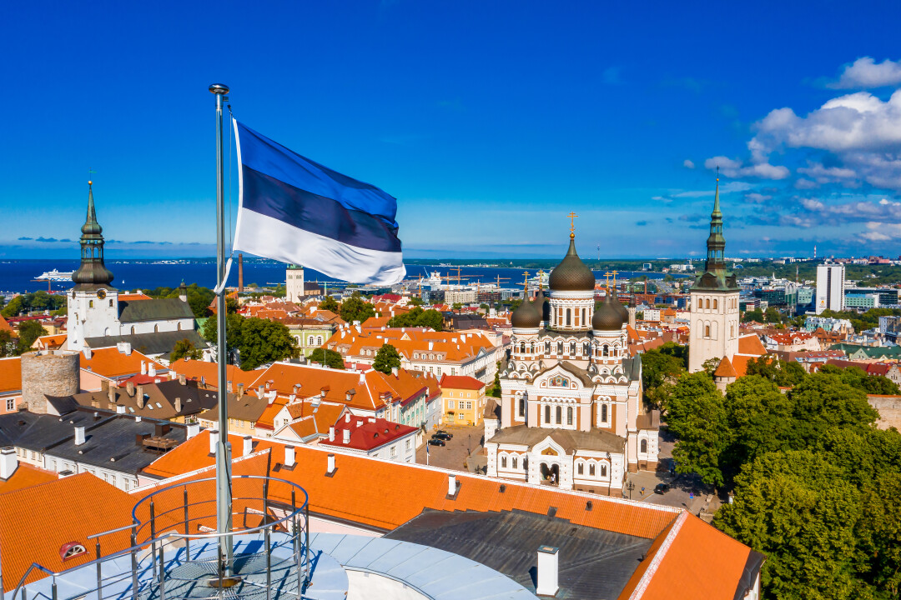
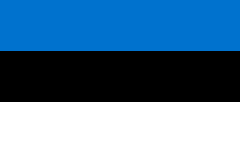
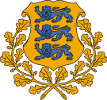
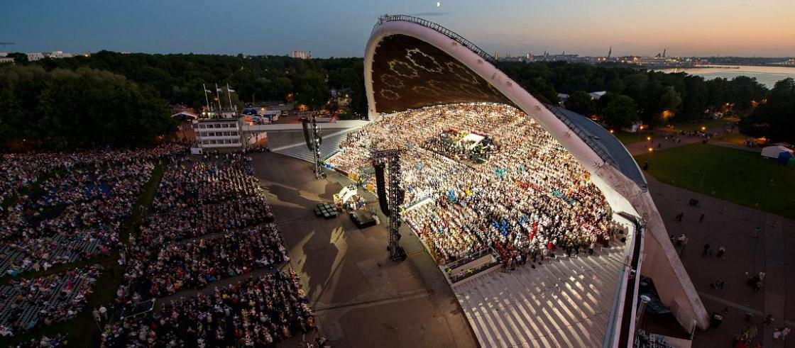
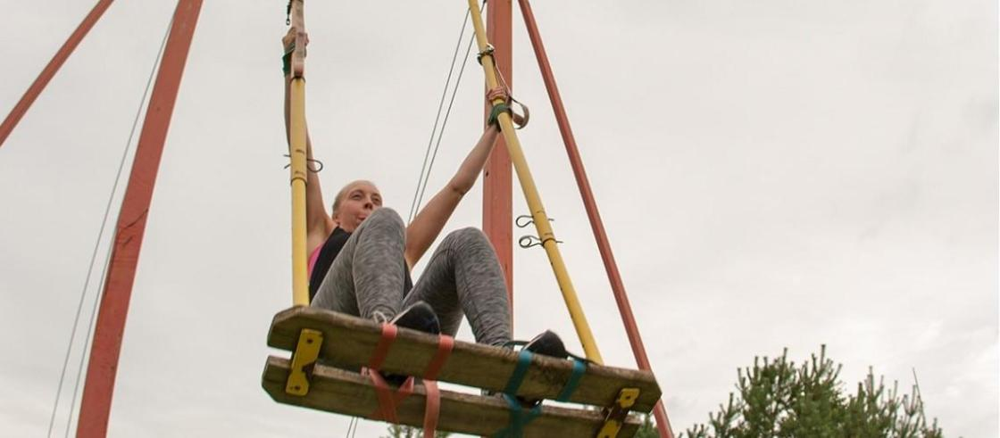
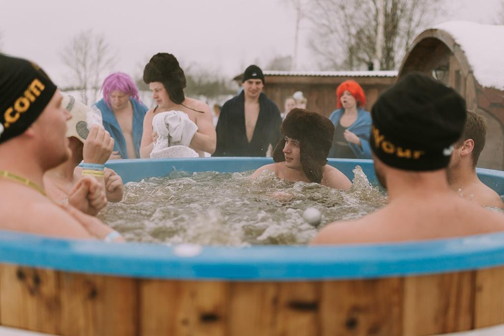
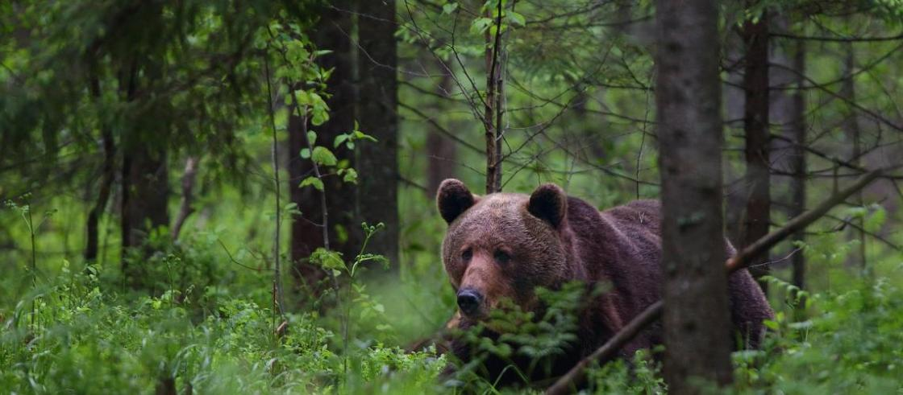

Эстония
Эстония - государство, расположенное в Северной Европе на восточном побережье Балтийского моря, омываемое водами Финского и Рижского заливов. На востоке граничит с Россией (протяжённость границы — 324 км), на юге — с Латвией (333 км). На севере, в Финском заливе, проходит морская граница с Финляндией. На севере и западе омывается водами Балтийского моря. Столица — город Таллин.
Поющая нация Эстония славится самой большой коллекцией народных песен: в архиве хранится более 133 тысяч записей. Эстонцев часто называют поющей нацией. Каждые пять лет здесь проходит Эстонский праздник песни и танца, который собирает 200 тысяч исполнителей и зрителей.
Почему хорошо жить в Эстонии?
много чистого воздуха и чистой воды, лесов, болот и островов, а также четыре времени года; земля, где живут замечательные люди и обитают звери, рыбы и насекомые. … один из самых красивых и трудных языков, на котором в мире говорят лишь немногие. Гордитесь, если знаете язык!
Флаг и его история

ВИДЕО
Герб и гимн
интересные факты о Эстонии
- ЛЮБОВЬ К ПЕСНЯМ
- БОЛЬШЕ ТУРИСТОВ, ЧЕМ ЖИТЕЛЕЙ
- ЭКСТРЕМАЛЬНОЕ РАСКАЧИВАНИЕ НА КАЧЕЛЯХ
- САМЫЙ БОЛЬШОЙ БАННЫЙ МАРАФОН В ЕВРОПЕ
- ОЧЕНЬ КРАСИВЫЕ ЛЕСА
Эстонию считают одной из самых поющих стран. Эстонцы обладают одним из крупнейших в мире собраний народных песен – в архиве хранится более 133 тысяч записей. Каждые пять лет в республике проходит Эстонский праздник песни и танца, который собирает около двухсот тысяч исполнителей и зрителей
Хотя население Эстонии составляет всего 1,3 млн человек, почти каждый год в нашу страну устремляются более 2 млн туристов. Примечательно то, что Эстония является страной, где количество приезжающих туристов превышает количество местных жителей. Около 1,5 млн человек ежегодно посещают Таллинн – включая более полумиллиона туристов с круизных лайнеров.
В детстве мы все любили качаться, но в Эстонии катание на качелях - это развлекательный вид спорта, где качели колеблются с нарастающей амплитудой, пока не обернутся вокруг вала.
Крупнейший банный марафон Европы проходит в эстонском городе Отепяэ. Его суть заключается в том, что за определенное количество времени участникам необходимо посетить как можно больше бань. Также в программу марафона входит купание в проруби
Леса занимают 52% площади Эстонии, именно поэтому республика является одной из самых "зеленых" стран Европы. Животный мир страны тоже очень многообразен: в эстонских лесах живут лисы, медведи, волки, зайцы, рыси, олени и так далее. Кстати, в Эстонии есть довольно необычная традиция – обнимать деревья. Эстонцы верят, что это укрепляет их силы.
